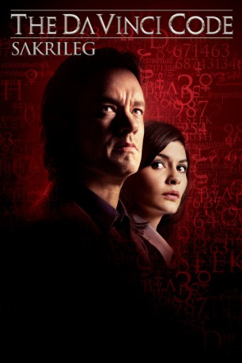

gesehen am 09.07.2015
gesehen am 09.07.2015Alternativ: The Da Vinci Code gesehen am 09.07.2015
 
 IMDB-Wertung: 6.6 / 10
IMDB-Wertung: 6.6 / 10  Metascore:
Metascore: 
Mitten in der Nacht wird der renommierte Harvard-Symbologe Robert Langdon (Tom Hanks) in den Pariser Louvre gerufen: Der Museumsdirektor wurde ermordet. Seine Leiche, die in einer Körperhaltung wie der des Vitruvischen Mannes von Leonardo da Vinci aufgefunden wird, ist der erste grausige Hinweis in einer mysteriösen Kette aus Codes und Symbolen. Unter Einsatz seines Lebens entschlüsselt Langdon mit Hilfe der Polizei- Kryptografin, Sophie Neveu (Audrey Tautou) versteckte Botschaften in den Kunstwerken Leonardo da Vincis. Alle verweisen auf eine sagenumwobene Bruderschaft, deren Mitglieder seit 2000 Jahren ein machtvolles Geheimnis bewahren. Die atemlose Schnitzeljagd führt Langdon und Sophie von Paris über London bis nach Schottland; währenddessen versuchen sie verzweifelt, den Code zu knacken, um mit ihm ein Geheimnis zu enthüllen, das die Menschheit in ihren Grundfesten erschüttern wird.
Jahr: 2006
Dauer: 149 Minuten
FSK: 12
Land: USA Studio: Columbia PicturesTonspuren:
Untertitel: Deutsch, Englisch,
Auflösung: 720p (1280×528) Größe: 6707 MB
Regisseur:  Ron Howard
Ron Howard
Drehbuch: Akiva Goldsman, Dan Brown
Soundtrack: Hans Zimmer
Darsteller:
 Tom Hanks als Robert Langdon
Tom Hanks als Robert Langdon Audrey Tautou als Sophie Neveu
Audrey Tautou als Sophie Neveu Ian McKellen als Sir Leigh Teabing
Ian McKellen als Sir Leigh Teabing Jean Reno als Captain Bezu Fache
Jean Reno als Captain Bezu Fache Paul Bettany als Silas
Paul Bettany als Silas Alfred Molina als Bishop Manuel Aringarosa
Alfred Molina als Bishop Manuel Aringarosa Jürgen Prochnow als Andre Vernet
Jürgen Prochnow als Andre Vernet Jean-Yves Berteloot als Remy Jean
Jean-Yves Berteloot als Remy Jean Jean-Pierre Marielle als Jacques Saunière
Jean-Pierre Marielle als Jacques Saunière Shane Zaza als Youth on Bus
Shane Zaza als Youth on Bus Denis Podalydès als Flight Controller
Denis Podalydès als Flight Controller Peter Pedrero als Father of Silas
Peter Pedrero als Father of Silas Charlie Rose als Book signing party guest
Charlie Rose als Book signing party guest Christopher Fosh als Armed Responce Police Officer , uncredited
Christopher Fosh als Armed Responce Police Officer , uncredited Sean Francis George als Scribe , uncredited
Sean Francis George als Scribe , uncredited Cheryl Howard als Person at Book-Signing Lecture , uncredited
Cheryl Howard als Person at Book-Signing Lecture , uncredited Dhaffer L'Abidine als PTS Agent , uncredited
Dhaffer L'Abidine als PTS Agent , uncreditedDatei: X:\3-Trilogie(N-Z)\Robert Langdon\Da Vinci Code - Sakrileg, The (2006, FSK12, 1280x528).mkv seit 13.02.2015
Festplatte: HD Collection-3(N-Z)-6(A-Z)
 Alle Filme aus Gruppe '3-Trilogie(N-Z)\Robert Langdon'
Alle Filme aus Gruppe '3-Trilogie(N-Z)\Robert Langdon'